Final Project
My inital idea was to try and create a storyboard or animatic version of one of my dreams. I've had some very plot intensive dreams over the years that are more like a movie than a real dream, and I've always thought it would be cool to somehow create a rendition of one for other people to watch. I started the project by creating a series of storyboards in a comic style.

Then I tried translating these panels to fully black and white digital drawings in Procreate. I also created some "dialogue cards" similar to a black and white movie to try and add some of the plot in that was harder to show visually.
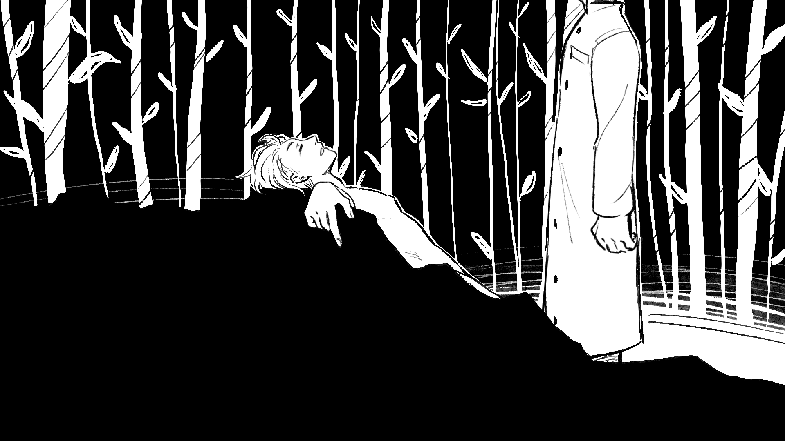 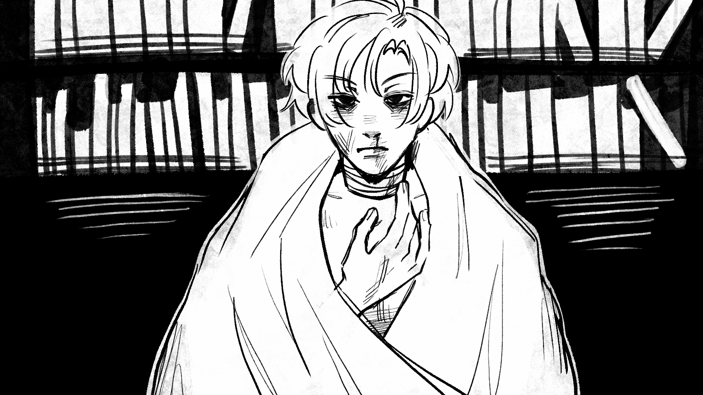 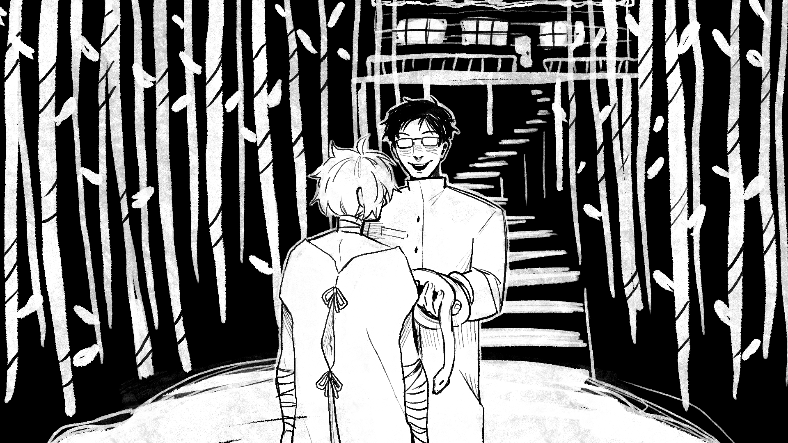 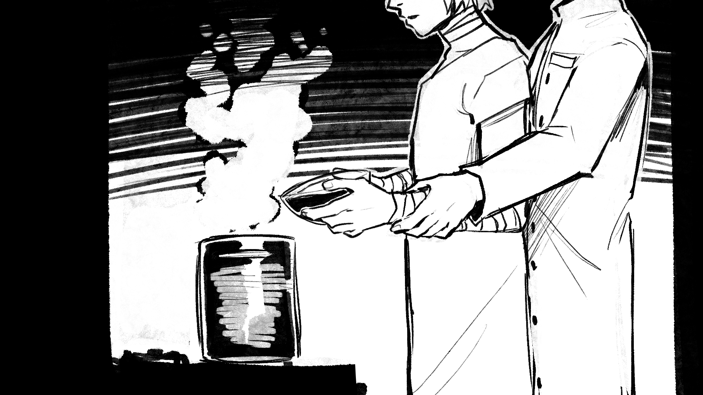 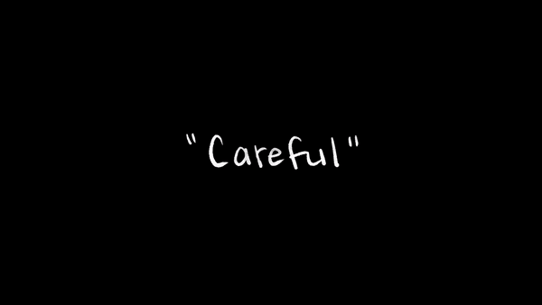Around the time I started really working on this project I watched/read 2 major inspirations that helped me decide how I was going to frame everything. One was the movie Love Lies Bleeding, the other was a manga by Asada Nemui called Sleeping Dead (I don't think this has an official English translation, but here's the cover. There is a French version for anyone who speaks French, and fantranslations scattered around on the internet).
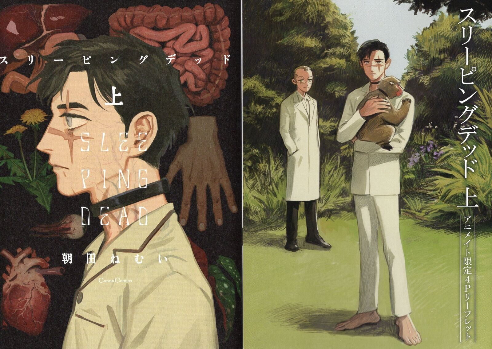It has similar themes to what I was trying to do, and it's also relatively short. Though the very rushed, unsatisfactory ending should have been a warning sign that this kind of project is difficult to achieve. Moving forward I started to create drafts using one of my favorite songs from Love Lies Bleeding to help me with timing.
I continued drawing, but it was at this point that I was beginning to think that I wouldn't be able to do it, to put it into perspective: it takes me 1-2 hours per panel, and I was splitting it into sections of 6 panels (or at least attempting to) so it would take about a week to do each section, which was about a page of my original sketches. In total I made 25 panels (though the last 2 were just semi-refined sketches), however in the process of trying to shorten the project I ended up cutting the majority of the middle. I got a lot of critiques that the story didn't make any sense, so I decided to scrap the idea and come up with something new.
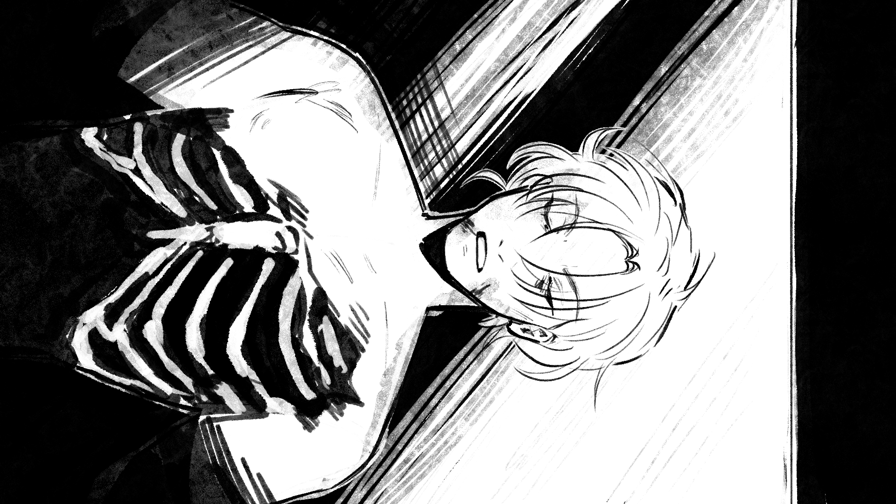 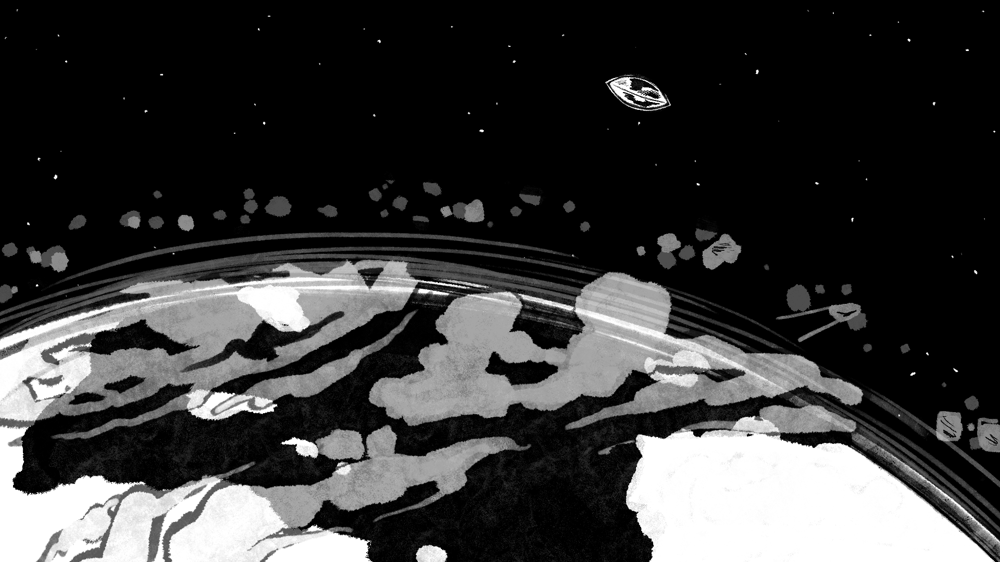 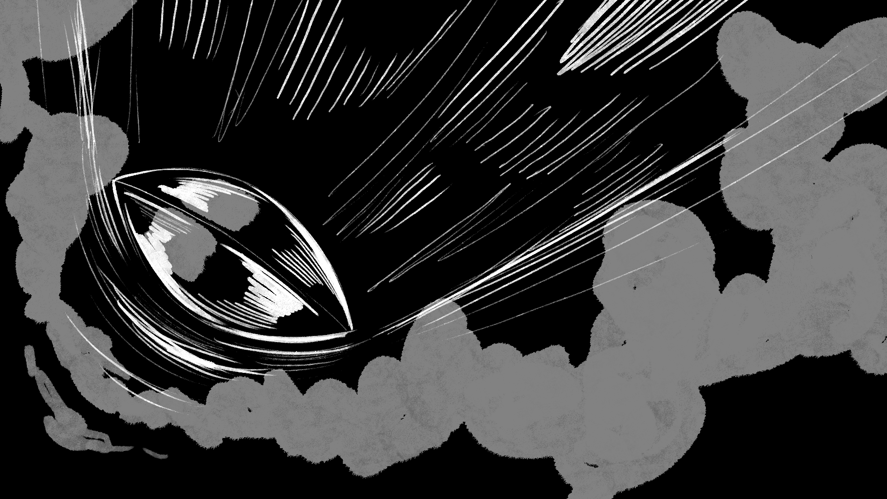
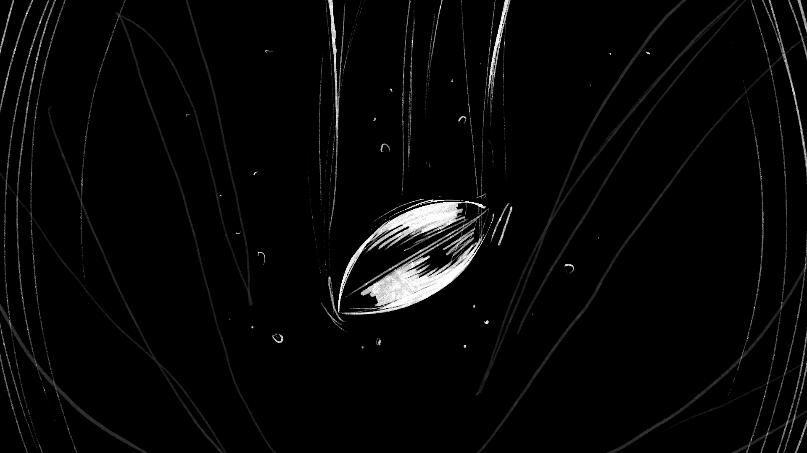
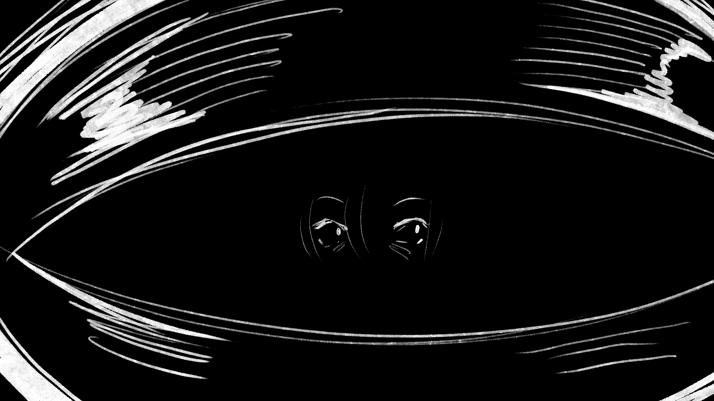
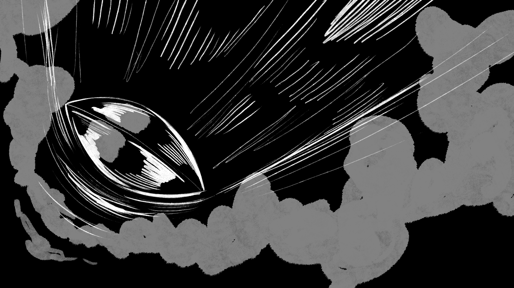
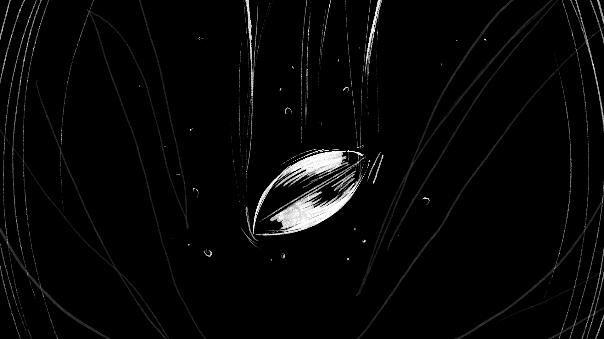
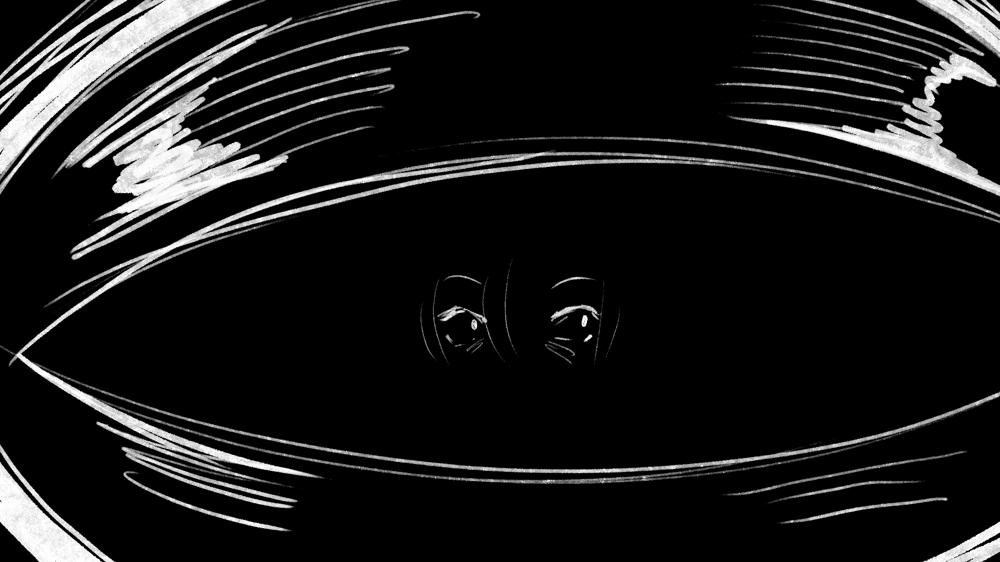
(Some of the later panels). At this point I didn't have any motivation to draw since my wrist had hit it's max capacity of drawings it could make, so I took a really long walk. This walk was some serious business, it was like 3 hours. It's something I do quite frequently, but not for this long usually, and I had recently gotten that bug identifying app (Seek) so I was filming a lot of the bugs around me. I realized that it would be cool to edit the bug videos to make it seem like a documentary or a horror movie, so I filmed as many bugs as I could find (mostly ladybug larva) and then edited it together to an audio I found of an old bug documentary with fun music. I still wanted to make it sort of spooky so I tried slowing down and speeding up parts of the audio to make it more uneasy feeling.
| Home | Project 1 | Project 2 | Project 3 |